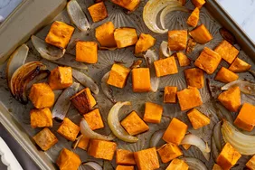

Oven Roasted Sweet Potatoes

Description
Sweet potatoes are roasted to perfection with chunky onion wedges and garlic, then finished with a drizzle of balsamic vinegar for a naturally sweet holiday side dish. My Granny made this for Easter dinner. We were all sitting at the table commenting on how delicious it was and asked for the recipe
Ingredients
- 1 sweet onion, cut into wedges
- 2 cloves garlic, sliced
- 3 tablespoons olive oil
- tablespoon balsamic vinegar, or more to taste
- pinch salt and ground black pepper to taste
Steps
- Gather all ingredients.
- Preheat the oven to 425 degrees F (220 degrees C).
- Mix sweet potatoes, onion, and garlic in a bowl. Drizzle olive oil over the mixture and toss to coat; pour into a shallow roasting pan.
- Roast sweet potato mixture in the preheated oven, turning frequently, until the vegetables are soft and golden brown, 30 to 35 minutes.
- Remove from the oven. Drizzle balsamic vinegar over the vegetables; season with salt and pepper.